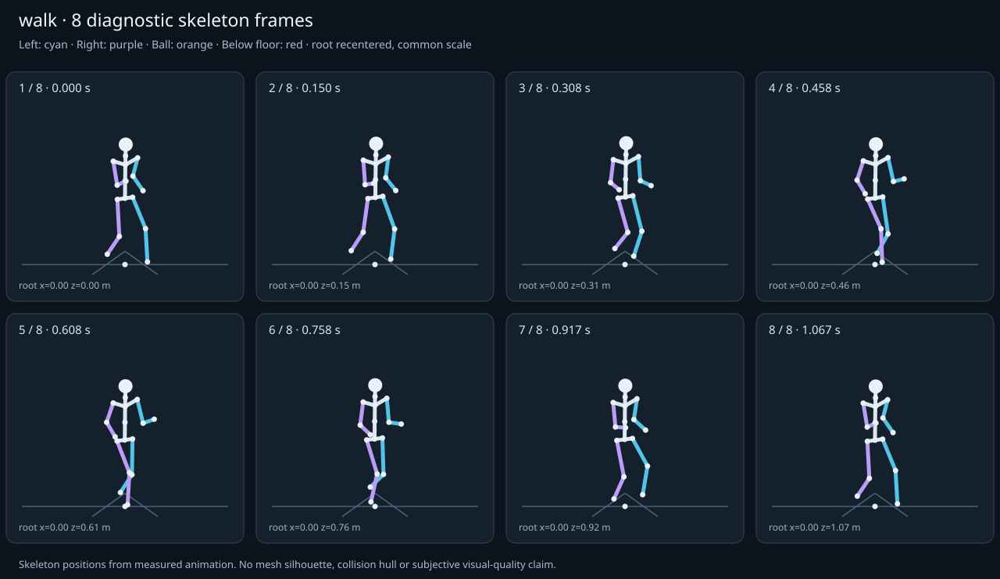

כל הקליפים · תצוגת התנועה · JSON המקור
ציון 91.8 · כיסוי 100%
הסוליות נמדדות בתרחיש תנועה חיצוני מוצהר; Root בנכס נשאר קבוע. הרציפות משתמשת בפוזה המקומית.

| מדד | מצב | ערך | ציון | ראיות |
|---|---|---|---|---|
| החלקת רגליים | ירוק | 0.000059 | 99.88 | ראיות מקוריות{
"coordinateSpace": "native GLB plus explicitly declared external actor position and heading, applied once",
"supportSource": "declared",
"windows": 3,
"samples": 159,
"maxDriftMeters": 0.0001,
"p95SpeedMetersPerSecond": 0.007046,
"worst": {
"bone": "RightFoot",
"t": 0.083333,
"start": 0,
"end": 0.106667,
"driftMeters": 0.0001
}
} |
| חדירה לרצפה | ירוק | 0 | 100 | ראיות מקוריות{
"samples": 2620,
"floorY": 0,
"probeKind": "declared sole probes plus skeletal joint centers (no mesh surfaces)",
"maxDepthMeters": 0,
"worst": {
"t": 0,
"bone": "LeftFoot",
"depthMeters": 0,
"y": 0.004
}
} |
| קפיצות פוזה | ירוק | 0.910402 | 81.79 | ראיות מקוריות{
"adjacentPairs": 130,
"observations": 2210,
"maxDegrees60Hz": 7.272892,
"maxMarkerStepHeight60Hz": 0.036416,
"maxRootStepHeight60Hz": 0.009862,
"worst": {
"ratio": 0.9104021390004075,
"t": 0.308333,
"previousTime": 0.3,
"bone": "RightFoot",
"markerStepHeight60Hz": 0.036416,
"degrees60Hz": 4.331628
}
} |
| חריגות אנטומיות | ירוק | 0 | 100 | ראיות מקוריות{
"testedFrames": 131,
"affectedFrames": 0,
"checks": 2227,
"maxLimbFlexionDegrees": 91.999997,
"maxRelativeSegmentLengthChange": 0,
"hingeDirectionChecked": true,
"axialTwistChecked": false,
"violations": []
} |
| מגע בכדור | לא חל | — | — | ראיות מקוריות{} |
| כניסה ויציאה מול המתנה | צהוב | 2.21573 | 61.76 | ראיות מקוריות{
"entry": {
"ratio": 2.215729813750858,
"t": 0,
"idleTime": 3.933333,
"markers": 17,
"rmsPositionHeight": 0.088629,
"rmsRotationDegrees": 28.018272,
"rmsVelocityHeightPerSecond": 0.247089,
"velocityEvaluated": true
},
"exit": {
"ratio": 2.215729809796209,
"t": 1.066667,
"idleTime": 3.933333,
"markers": 17,
"rmsPositionHeight": 0.088629,
"rmsRotationDegrees": 28.018271,
"rmsVelocityHeightPerSecond": 0.232196,
"velocityEvaluated": true
},
"worstEndpoint": "entry",
"alignment": "horizontal root translation; raw asset poses used when provided"
} |
| מהירות גוף מול צעדים | ירוק | 0.000057 | 99.99 | ראיות מקוריות{
"rootSource": "sampled presented root",
"rootSpeedMetersPerSecond": 1,
"observedRootSpeedMetersPerSecond": 1,
"referenceRootSpeedMetersPerSecond": 1,
"supportSource": "declared",
"backwardSweepSpeedMetersPerSecond": 0.999943,
"cadenceStepsPerSecond": 2.8125,
"impliedStrideMeters": 0.71107,
"rootStrideMeters": 0.711111,
"supportSweeps": [
{
"bone": "LeftFoot",
"start": 0,
"end": 0.64,
"duration": 0.64,
"sweepMeters": 0.639963,
"speedMetersPerSecond": 0.999943
},
{
"bone": "RightFoot",
"start": 0,
"end": 0.106667,
"duration": 0.106667,
"sweepMeters": 0.10663,
"speedMetersPerSecond": 0.999656
},
{
"bone": "RightFoot",
"start": 0.533333,
"end": 1.066667,
"duration": 0.533333,
"sweepMeters": 0.533333,
"speedMetersPerSecond": 1
}
]
} |
| סימטריה | ירוק | 0 | 100 | ראיות מקוריות{
"mode": "gait",
"modeSource": "declared",
"structuralMismatch": 0,
"segments": [
{
"segment": "Arm-ForeArm",
"mismatch": 0
},
{
"segment": "ForeArm-Hand",
"mismatch": 0
},
{
"segment": "UpLeg-Leg",
"mismatch": 0
},
{
"segment": "Leg-Foot",
"mismatch": 0
}
],
"motionRmsHeight": 0,
"worstMotion": {
"t": 0.833333,
"errorHeight": 0
},
"bilateralPoseRmsHeightUnscored": 0.142902,
"note": "Motion is mirrored in a pelvis-centred body basis."
} |